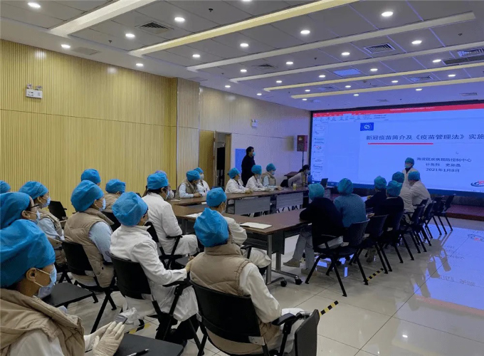

HKeeping--云南省卫生健康委员会
首页
机构信息
动态信息
党群建设
健康服务
健康教育

云南省组织开展2022年住院医师规范化培训和助理全科医生培训结业临床实践能力考核（西医类）工作——[2022-06-01]
省卫生健康委党组关于巡视“回头看”整改进展情况的通报——[2022-05-26]
钟政声：老年人的事，再小也要当大事！要以打击整治养老诈骗专项行动为老年人安享晚年营造良好社会环境——[2022-05-18]
云南32人入选全国第七批老中医专家学术经验指导老师 39个工作室入选国家传承项目——[2022-05-26]
一图读懂云南省“十四五”职业病防治规划——[2022-04-22]
关于云南省无烟党政机关建成名单的公示——[2022-05-30]
云南省卫生健康委2022年6月至7月政府采购意向——[2022-05-30]
2022年5月云南省职业健康检查机构备案名单——[2022-05-30]
2022年5月云南省职业健康检查机构备案变更名单——[2022-05-26]
云南省卫生健康委关于注销云南天朗职业卫生技术服务有限公司职业病诊所职业健康检查备案的公告——[2022-05-22]
昆明医科大学第一附属医院2022年面向社会公开招聘工作人员的公告——[2022-05-20]
WW 新冠专题
云南防疫
·云南省疫情防控措施
·云南省近日疫情报道
防疫宣传
·疫情当下，务必做好自我防护
·疫情就是命令，防控就是责任
共克时艰
·万众一心 抗击疫情
·“书写”担当“疫线”有我
便民服务
互动服务
问题解答
投诉咨询
下载专区